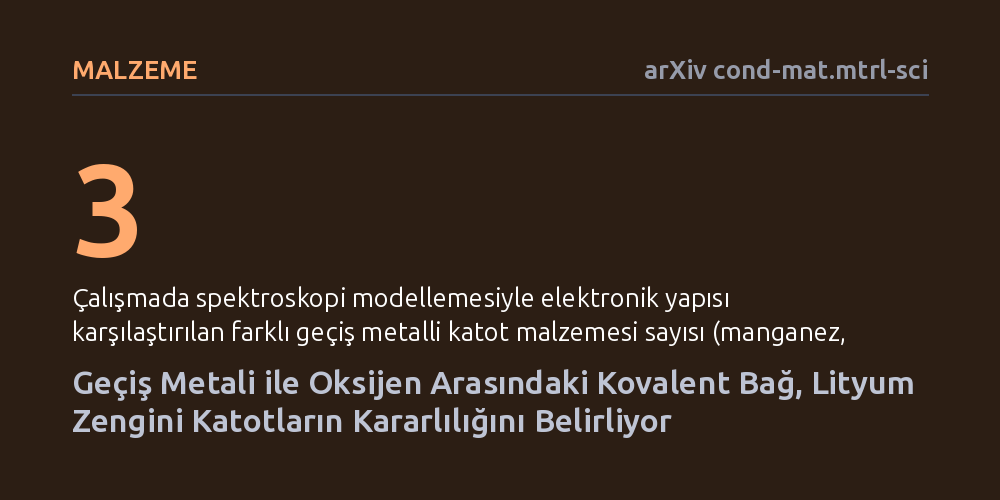

MALZEME · arXiv cond-mat.mtrl-sci · 2026-10-17
Araştırmacılar, lityum zengini batarya katotlarında yaşanan kararsızlığın ve gaz çıkışının nedenini spektroskopi modellemeleriyle inceledi. Geçiş metali ile oksijen arasındaki kovalent bağ kuvvetinin, oksijen üzerindeki elektron açıklarını kararlı tutarak pilin kapasite kaybını önlediği bulundu.
Bu bulgu, yüksek enerji yoğunluklu bataryalarda oksijen kaybını ve gaz çıkışını engellemenin yolunun oksijen aktivitesini yok etmekten değil, metal-oksijen bağını güçlendirmekten geçtiğini gösteriyor.

Elektrikli araçlar ve taşınabilir cihazlar geliştikçe, mevcut lityum iyon pillerden çok daha fazla enerji depolayabilen yeni katot malzemelerine olan ihtiyaç artıyor. Lityum zengini katotlar, geçiş metali başına fazladan lityum barındırdıkları için yüksek kapasite vadeden en güçlü adaylar arasında yer alıyor. Ancak pilden daha fazla enerji çekmek için bu fazla lityum çıkarıldığında, malzeme olağanüstü yüksek bir yükseltgenme durumuna ulaşıyor.
Bu aşırı yüklenme durumu, katot yapısında istenmeyen kimyasal yan reaksiyonları tetikliyor ve genellikle oksijenin gaz olarak açığa çıkmasıyla sonuçlanıyor. Gaz çıkışı hem pilin hızla kapasite kaybetmesine yol açıyor hem de güvenlik sorunları yaratıyor. Tuhaf olan şu ki, kullanılan geçiş metalinin türüne bağlı olarak bazı katotlar bu gerilime dayanıp voltajını korurken, manganez gibi yaygın metaller içerenler hızla çöküyor. Bilim insanları uzun süredir bu farklılığın ardındaki temel mekanizmayı anlamaya çalışıyordu.
Araştırmacılar, metal değişiminin batarya kararlılığı üzerindeki etkisini çözmek için manganez, rutenyum ve iridyum içeren üç model katot malzemesini (Li2MO3) mercek altına aldı. Bu üç metal, periyodik tabloda farklı sıralarda yer aldıkları için oksijenle kurdukları bağın elektronik karakteri açısından önemli farklılıklar gösteriyor.
Çalışmada fiziksel pil prototipleri döngüye sokulmak yerine, çekirdek seviyesi spektroskopi teknikleri bilgisayar ortamında modellendi. Bu simülasyonlar sayesinde, lityum atomları yapıdan çekildikçe katot içindeki elektronların nasıl yeniden dağıldığı ve açığa çıkan elektriksel yüklerin metal ile oksijen arasında nasıl paylaşıldığı atomik düzeyde adım adım takip edildi.
Elde edilen bulgular, lityum çıkarıldığında oksijen atomları üzerinde oluşan elektron eksikliklerinin (ligant deliklerinin) tüm malzeme türlerinde ortaya çıktığını gösterdi. Ancak manganez bazlı katotta (Li2MnO3), malzeme henüz taban durumundayken bile oksijenden metale yoğun bir yük aktarımı eğilimi taşıyor. Lityum çekildikçe oksijen üzerindeki elektron açığı hızla artarak kararsızlığa ve bağların kopmasına neden oluyor.
Buna karşılık rutenyum ve iridyum bazlı katotlara geçildiğinde, geçiş metali ile oksijen arasındaki kovalent bağ melezleşmesi belirgin şekilde güçleniyor. Bu güçlü kovalent ağ, elektron eksikliğinin tek bir oksijen atomunda hapsolup kararsızlık yaratması yerine tüm metal-oksijen yapısına yayılmasını sağlıyor. Böylece katot, oksijen gazı oluşturmadan çok daha geniş bir şarj aralığında kararlı kalmayı başarıyor.
Bu çalışma, yüksek enerji yoğunluklu katot tasarlarken bugüne kadar kabul gören genel bir varsayımı sorgulatıyor. Oksijenin reaksiyona katılmasını tamamen engellemeye çalışmak yerine, oksijen ile geçiş metali arasındaki kovalent bağı güçlendirmenin yeterli olabileceğini kanıtlıyor.
Yazarlar, moleküler oksijen oluşumuna mecbur kalmadan tersinir yüksek voltajlı redoks döngüsünün metal-oksijen kovalentliğiyle sağlanabileceğini vurguluyor. Bu yaklaşım, gelecekte pahalı veya nadir metallere bağımlı kalmadan, benzer kovalent karakteri sağlayacak uygun maliyetli malzeme kombinasyonlarının geliştirilmesine doğrudan rehberlik edebilir.